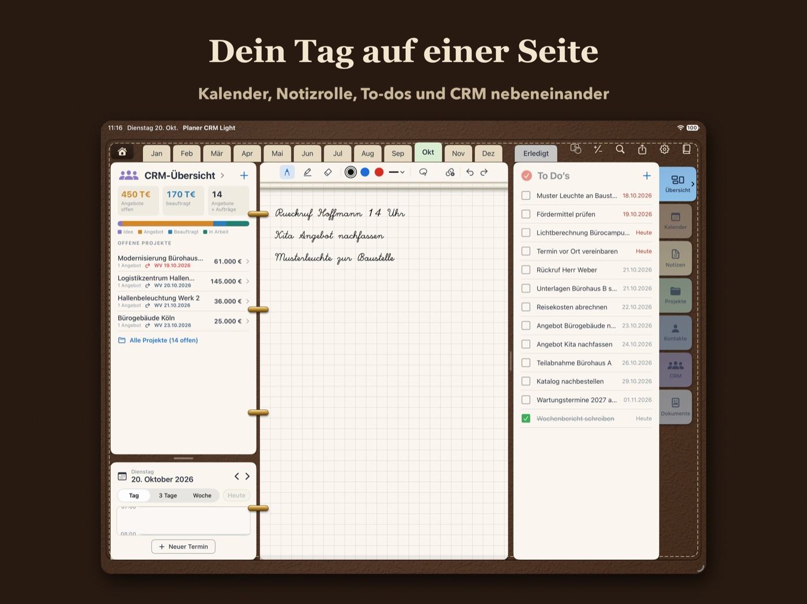

Planer CRM Light verbindet einen klassischen Ringbuch-Planer mit einem schlanken CRM für Außendienst, Handwerk und Selbstständige. Du planst deinen Tag, schreibst mit dem Apple Pencil wie auf Papier und hast Projekte, Angebote und Kunden immer daneben.

- Übersicht mit Kalender, Notizrolle, To-dos und CRM, frei anordnen
- Kalender mit Jahr, Monat, Woche, drei Tagen und Tag, Feiertage und Schulferien
- Projekte mit mehreren Angeboten, Wiedervorlagen und Kundenakte
- Angebots-PDFs einlesen: Die App lernt das Layout deiner Angebote
- Synchronisierung über deine eigene iCloud, kein Konto, keine Werbung, kein Tracking
- 14 Tage kostenlos testen, danach Jahrgang als Einmalkauf. Kein Abo.